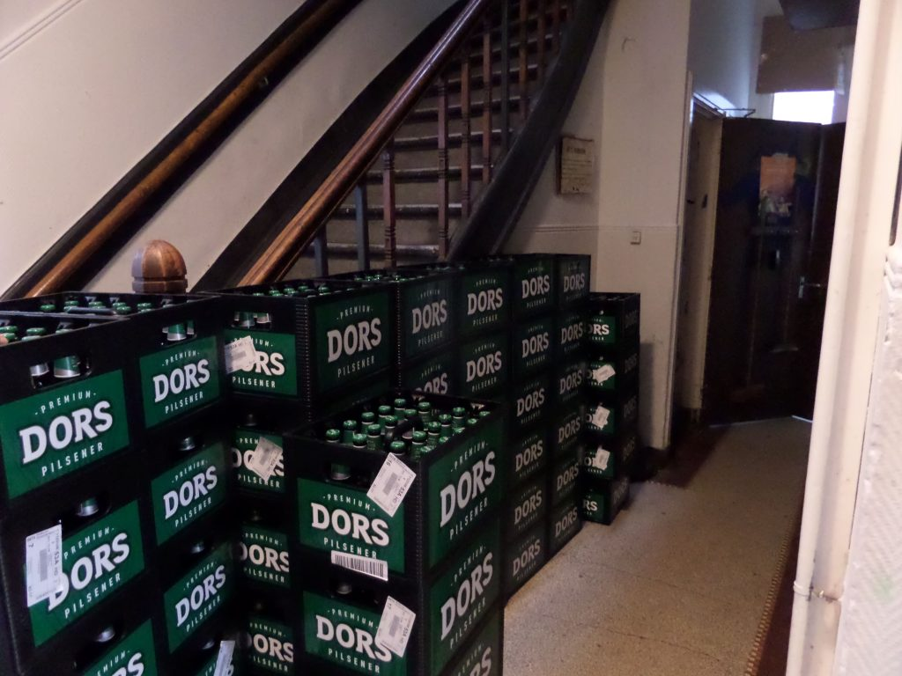

<!-- Plaats dit blok in index.html, vóór de footer -->
<section class="photo-preview" id="fotos">
  <div class="photo-preview-inner">
    <div class="photo-preview-heading">
      <span class="section-eyebrow">FOTOALBUM</span>
      <h2>Een kijkje in het Nayadehuis</h2>
      <p>Van gezellige avonden tot mooie herinneringen. Dit is ons huis!</p>
    </div>
    <div class="photo-preview-grid">
      
      
      
      
      
      
    </div>
    <a class="gallery-link" href="galerij.html">Bekijk alle foto's <span aria-hidden="true">→</span></a>
  </div>
</section>
